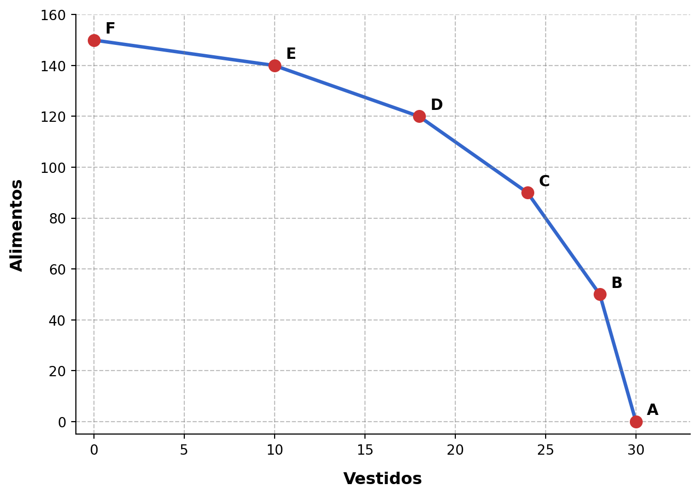

1 Las decisiones económicas
1.1 ¿Qué es la economía?
La palabra economía proviene de la combinación de dos antiguas palabras griegas: oikos y nomos. Aunque ambas palabras eran polisémicas –tenían diferentes significados con distintos matices–, podrían traducirse al español actual, respectivamente, como casa y administración. Así, el significado original de la palabra economía vendría a ser algo como administración de la casa. Con el paso del tiempo, la palabra economía desbordó sus originales límites hogareños para referirse a aspectos sociales más generales: se acuñó entonces el término economía política, que, al hacer referencia a la antigua polis griega, destacaba su alcance sobre el conjunto de la sociedad. En la actualidad, el término economía se usa para referirse tanto a la administración de los recursos dentro del hogar como a la administración de los recursos en sociedad.
1.1.1 Escasez, elección y coste de oportunidad
El estudio de los fenómenos económicos, tal y como lo hacen los economistas, se basa en tres premisas. La primera es que las personas tienen deseos o «necesidades» que satisfacer. La segunda es que, para satisfacer sus deseos, los individuos disponen de distintos medios, que en economía se denominan recursos. La tercera es que los deseos son ilimitados, mientras que los recursos son limitados. Así pues, las personas utilizan recursos limitados para tratar de satisfacer deseos ilimitados.
1.1.1.1 Escasez
Lo que carateriza a todo fenómeno económico es el desajuste entre el carácter ilimitado de los deseos y el carácter limitado de los recursos para satisfacer dichos deseos. Solo cuando existe este desajuste nos encontramos frente a un fenómeno económico, susceptible de ser analizado mediante las herramientas de la ciencia económica.
El carácter ilimitado de los deseos es fácilmente observable en la práctica. No hace falta pensar en una persona extraordinariamente ambiciosa. Basta con preguntar a cualquier persona de nuestro entorno: sin importar cuántos deseos haya satisfecho ya, siempre le quedará algún deseo, grande o pequeño, por satisfacer.
El carácter limitado de los recursos es también fácil de apreciar. Los recursos de cualquier persona para conseguir bienes y servicios están constituidos fundamentalmente por sus ingresos, que son limitados. Otro recurso fundamental que todas las personas emplean para satisfacer sus deseos es el tiempo, y este también es limitado.
Dado el carácter ilimitado de los deseos y el carácter limitado de los recursos para satisfacerlos, generalmente los recursos disponibles son insuficientes para satisfacer todos los deseos que requieren del uso de dichos recursos. En economía, cuando la cantidad disponible de un recurso es insuficiente, se dice que dicho recurso es escaso. La escasez de un recurso viene determinada por la relación entre la cantidad disponible del recurso y la cantidad necesaria para satisfacer todos los deseos que requieren de dicho recurso: incluso cuando existe gran cantidad de un recurso, este es escaso si dicha cantidad es insuficiente para satisfacer todos los deseos que requieren de dicho recurso. Esta escasez es el centro alrededor del que giran todos los problemas económicos.
Dado que los recursos son limitados, mientras que los deseos son ilimitados, casi todo recurso es escaso en la mayoría de contextos. Excepcionalmente, en determinados contextos se pueden encontrar recursos en cantidad más que suficiente para colmar los deseos que se pueden satisfacer con ellos; en estos casos, dichos recursos reciben el nombre de bienes libres. Un ejemplo típico es el aire que respiramos, cuya cantidad es por lo general muy superior a la que deseamos. No obstante, solo hace falta pensar un poco para identificar ciertos contextos en los que el aire respirable no es tan abundante como nos gustaría; en estos casos, el aire es también un recurso escaso.
1.1.1.2 Elección
La escasez hace necesaria la elección entre los usos u opciones diferentes que pueden darse a los recursos. Por ejemplo, si los ingresos de un consumidor no son suficientes para adquirir una camisa y realizar un viaje de fin de semana, el individuo deberá elegir entre una de las dos compras. Igualmente, si deseamos tanto ir al cine como pasear por el campo pero solo disponemos de dos horas libres, es necesario elegir una de las dos alternativas. La escasez siempre genera la necesidad de elegir entre alternativas.
1.1.1.3 Coste de oportunidad
El proceso de elección que llevan a cabo los individuos tiene una implicación importante: elegir entre dos cosas implica renunciar a una de ellas. Así, en los ejemplos anteriores, el consumidor que decide realizar el viaje está renunciando a la camisa, y el que decide ir a pasear está renunciando al cine.
Toda elección tiene un coste de oportunidad, que se define como el valor de la mejor opción alternativa a la elegida (el coste de renunciar). Así, en los ejemplos anteriores, el coste de oportunidad del viaje es el valor que el individuo da a la camisa, y el coste de oportunidad del paseo es el valor que el individuo da a la sesión de cine.
A través de este razonamiento se puede obtener una importante implicación económica, que se ha convertido en lugar común entre los economistas: si los recursos son escasos, entonces «nada es gratis», pues cualquier actividad tiene un coste de oportunidad.
1.1.2 Microeconomía y macroeconomía
Las diversas elecciones o decisiones de los agentes económicos individuales (consumidores y productores) tienen efectos en la oferta, la demanda, la producción y el precio de bienes y servicios en mercados concretos, como el mercado de zapatillas, el mercado del automóvil, el mercado de la vivienda, el mercado de trabajo, etc. El cúmulo de decisiones y comportamientos individuales y sus efectos en mercados concretos recibe el nombre de microeconomía. Dentro de la microeconomía se suelen distinguir tres grandes cuestiones de interés: la decisión del consumidor, que elige qué y cuánto consumir; la decisión del productor, que elige qué y cuánto producir; y las fuerzas del mercado, que determinan los precios y asignan los recursos de manera diferente en función del tipo de competencia existente en cada mercado (competencia perfecta, monopolio, etc.).
Todo agente individual toma decisiones y participa en distintos mercados al mismo tiempo: en algunos mercados participa como consumidor, mientras que en otros mercados participa en el proceso de producción. La interacción de todas las decisiones y comportamientos individuales y de todos los mercados concretos da lugar a unos resultados globales, observables en el conjunto de la economía.
Así pues, entendemos por macroeconomía el comportamiento del sistema económico al completo, plasmado en magnitudes «totales» o, como dicen los economistas, magnitudes agregadas. Por ejemplo, pertenecen al ámbito de la macroeconomía la evolución del producto interior bruto, la tasa de paro o el nivel general de precios. Dentro de la macroeconomía se suelen distinguir como principales cuestiones de interés el crecimiento económico, esto es, la evolución del nivel de producción de una economía a largo plazo; los ciclos económicos, o evolución de los niveles de producción y empleo en el corto plazo; la economía monetaria y financiera, especialmente la evolución del nivel general de precios; y el comercio internacional, plasmado en documentos contables como la balanza de pagos y en otros indicadores. También es de interés la influencia que el sector público puede tener en todos estos ámbitos a través de políticas fiscales y monetarias, como un aumento del impuesto sobre la renta de las personas físicas por parte del gobierno central o una reducción de los tipos de interés por parte del banco central.
1.2 La decisión de producir
1.2.1 Los factores productivos
Para satisfacer sus deseos, la sociedad dispone de muchos tipos de recursos. En esta sección nos centraremos en los recursos que se usan para producir otras cosas, los cuales se denominan factores productivos.
Pueden distinguirse tres tipos de factores productivos:
Tierra. El nombre genérico «tierra» se usa en economía para hacer referencia a todos los recursos naturales. Por tanto, la tierra como factor productivo incluye no solo el suelo, sino también el agua, el petróleo, minerales, etc.
Trabajo. Está constituido por los recursos humanos y su capacidad física y mental para trabajar, derivada de su salud y su educación.
Capital. Está formado por maquinaria, instalaciones e infraestructuras (carreteras, líneas férreas, etc.).
Producir es combinar los factores productivos para obtener algo distinto y utilizable que se denomina el producto.
Los productos se pueden clasificar, a grandes rasgos, en dos categorías:
Productos tangibles, denominados bienes o mercancías. Por ejemplo, un agricultor combina suelo, trabajo y herramientas, entre otras cosas, para conseguir una cosecha de trigo. Una fábrica utiliza suelo, trabajo, máquinas, etc., para producir muebles.
Productos intangibles, denominados servicios. Por ejemplo, un peluquero utiliza suelo, trabajo y herramientas, entre otras cosas, para producir cortes de pelo.
Para abreviar, en economía es habitual usar el término «bien» de manera genérica, incluyendo implícitamente tanto bienes en sentido estricto (productos tangibles) como servicios (productos intangibles).
1.2.2 La tecnología
La ciencia económica no se ocupa de estudiar cuáles son los procesos físicos por los que a partir de los factores productivos se obtiene el producto. Esa es labor de las ciencias agrícolas o de la ingeniería. Lo que importa a la economía es la cantidad de producto que puede obtenerse a partir de cada posible combinación de factores productivos. Por ejemplo, la economía no se ocupa de conocer el proceso mecánico por el que la aceituna se convierte en aceite. Lo que interesa a la economía es la cantidad máxima de aceite que puede producirse con unas determinadas toneladas de aceituna, una determinada cantidad de trabajo y número de horas de funcionamiento de las máquinas.
Estas cantidades máximas están determinadas por la tecnología, que en economía se define como el conjunto de formas de hacer y actuar para producir. Son estas formas de hacer y actuar, condicionadas por los conocimientos técnicos existentes, las que determinan qué cantidades máximas de producto pueden obtenerse con cada combinación de factores productivos.
Cuando se produce un avance en los conocimientos, inventos o nuevos descubrimientos que mejoran las formas de hacer y actuar para producir, se dice que se ha producido una mejora tecnológica.
La aplicación de una mejora tecnológica a la producción constituye una innovación. Puede consistir en una distinta forma de hacer las cosas(innovación de proceso) o en la aparición de un nuevo producto (innovación de producto).
1.2.3 El uso del producto: bienes de consumo y de capital
La mayor parte de los productos se utilizan para satisfacer deseos de los individuos, y en ese caso se denominan bienes de consumo. El consumo, que es el fin último de la actividad económica, es la actividad por la que los individuos satisfacen sus deseos.
El individuo toma una decisión en la que decide qué parte de la renta que percibe en un periodo de tiempo determinado va a destinar a consumo y qué parte va a destinar a ahorro. El ahorro consiste en consumir menos en el presente para consumir más en el futuro. También se puede “desahorrar”, consumiendo más en el presente y menos en el futuro (endeudándose). Mediante el ahorro se genera una renta acumulada, que es denominada riqueza. Esta riqueza se puede mantener en activos, que pueden ser materiales (terrenos, inmuebles…), o financieros (cuentas bancarias, letras, acciones…).
No todos los bienes se producen para satisfacer deseos de forma inmediata. Reciben el nombre de bienes de capital, o bienes de inversión, aquellos que no se producen para satisfacer deseos directamente sino con el fin de usarlos para producir otros bienes. El proceso por el que la sociedad produce bienes de capital, aumentando el fondo o stock de capital, es denominado inversión. La decisión de invertir tiene como objetivo aumentar la capacidad productiva futura. Implica asumir costes en el presente, dado que se dedican recursos a la producción de bienes que no satisfacen ningún deseo de forma directa y rápida, pero estos costes permiten a cambio obtener ganancias en el futuro, pues gracias a esos bienes de capital se podrá producir mayor cantidad de bienes de consumo en el futuro.
1.3 El reparto del producto: la distribución
Junto a la producción, la economía también estudia la distribución, esto es, cómo se reparten los bienes y servicios producidos entre los miembros de la sociedad. En función de cómo se agrupen los individuos de la sociedad, existen dos formas de medir o analizar la distribución, denominadas distribución funcional y distribución personal.
La distribución funcional se refiere a cómo se reparte el producto entre grupos sociales atendiendo al tipo de factor productivo aportado. En lo fundamental, se refiere a cómo se reparte el producto entre los trabajadores, que aportan trabajo, y los propietarios de empresas, que aportan capital. Ambos grupos se reparten el producto, que llega a los trabajadores en forma de salarios y a los propietarios de empresas en forma de beneficios.
La distribución personal se refiere a cómo se reparte el producto entre individuos, con independencia del tipo de factor productivo aportado. Habitualmente se ordena a todos los invididuos de una sociedad en función de la parte del producto que perciben, de manera que se puede observar cuánta parte del producto va a parar a los individuos de menor ingreso y cuánta parte va a parar a los de mayor ingreso.
1.4 Formas de organización: autoridad y mercado
¿Cómo se decide qué se produce y cómo se distribuye lo producido? Estas cuestiones son de fácil respuesta para una persona que vive aislada, en soledad: producirá lo que satisfaga sus deseos particulares —dentro de lo que le permitan los recursos, siempre escasos, a su disposición— y se quedará ella misma con toda la producción. Sin embargo, no es esto lo que hace la inmensa mayoría de las personas, que viven en sociedad y se han percatado hace tiempo de que el autoabastecimiento individual, en comparación con otros métodos, les permite satisfacer pocos deseos. En todas las sociedades del mundo existe cierto grado de especialización: cada persona participa en un número limitado de procesos productivos, lo que le confiere una mayor destreza en la producción de ese bien o servicio concreto; después, toda o parte de su producción va a parar a otras personas, y, a su vez, toda o parte de la producción de cada una de estas personas va a parar a la primera. La gran ventaja de este sistema es que la especialización aumenta notablemente la capacidad de producción de la sociedad en su conjunto. El gran inconveniente es que las preguntas «¿qué producir?» y «¿cómo distribuirlo?» dejan de tener fácil respuesta.
A lo largo de la historia han existido dos grandes formas de organización de la actividad económica: la autoridad y el mercado.
1.4.1 La mano visible de la autoridad
En un sistema basado en la autoridad, existe una persona o un colectivo que, de forma centralizada, decide qué se va a producir y cómo se va a distribuir lo producido, asigna las tareas encaminadas a ese fin y obliga a cumplirlas. Sistemas económicos basados en la autoridad han estado vigentes en Rusia y otros países de Europa oriental, China o Cuba. En la actualidad son muy pocos los lugares en los que domina este sistema.
1.4.2 La mano invisible del mercado
- Mercado: múltiples decisiones individuales sobre aspectos concretos y privados determinan el resultado final. Adam Smith afirmó que, al tomar cada uno las decisiones que mejor se ajustan a sus intereses, el resultado final no es el caos sino un determinado orden. Como si el comportamiento voluntario de consumidores y productores fuese guiado por una mano invisible.
1.5 La frontera de posibilidades de producción (FPP)
En las secciones anteriores hemos abordado la producción y la distribución. No obstante, antes de decidir qué producir y cómo distribuirlo, es necesario saber qué se puede producir. Como ya se ha indicado, los recursos son limitados, y esto restringe las posibilidades de producción de una economía.
La frontera de posibilidades de producción (FPP) se refiere a las posibilidades de elección de una sociedad.
Conocer las opciones: Recursos escasos y la tecnología es limitada.
Todos los condicionantes que limitan las posibilidades de elección se denominan restricciones.
La FPP constituye un modelo que va a indicar las combinaciones de bienes que se pueden o no se pueden producir, dados unos recursos limitados y una tecnología.
Para entender cómo una sociedad gestiona la escasez, analizaremos el modelo de la Frontera de Posibilidades de Producción (FPP) a través de un ejemplo práctico con restricciones de recursos y tecnología fijas.
1.5.1 Configuración del modelo y factores de producción
Supongamos una economía simplificada que cuenta con los siguientes recursos productivos disponibles:
- Tierra (\(T\)): 10 unidades.
- Trabajo (\(L\)): 5 unidades.
- Capital (\(K\)): 3 unidades.
En esta economía únicamente se pueden producir dos tipos de bienes: 1. Alimentos: Cuya producción requiere combinar factores de tierra y trabajo. 2. Vestidos: Cuya producción requiere combinar factores de capital y trabajo.
Se asume, además, que el estado de la tecnología se mantiene constante durante el análisis.
1.5.2 Tablas de producción
Las tablas que se muestran a continuación, llamadas tablas de producción, muestran las cantidades máximas que se obtienen de cada bien de manera independiente según la asignación del factor trabajo (\(L\)). Dado que la producción de vestidos no requiere tierra, se puede destinar toda la tierra a producir alimentos. Del mismo modo, dado que la producción de alimentos no requiere capital, se puede destinar todo el capital a producir vestidos.
| Trabajo (\(L\)) | Tierra (\(T\)) | ALIMENTOS |
|---|---|---|
| 0 | 10 | 0 |
| 1 | 10 | 50 |
| 2 | 10 | 90 |
| 3 | 10 | 120 |
| 4 | 10 | 140 |
| 5 | 10 | 150 |
| Trabajo (\(L\)) | Capital (\(K\)) | VESTIDOS |
|---|---|---|
| 0 | 3 | 0 |
| 1 | 3 | 10 |
| 2 | 3 | 18 |
| 3 | 3 | 24 |
| 4 | 3 | 28 |
| 5 | 3 | 30 |
Las tablas de producción para estos dos bienes reflejan una importante ley económica: la Ley de Rendimientos Decrecientes. A medida que se asignan más unidades de trabajo a una cantidad fija de tierra o capital, el incremento en la producción final es cada vez menor.
1.5.3 Combinaciones de producción eficientes
Dado que el factor trabajo (\(L = 5\)) es limitado, la sociedad debe decidir cómo distribuirlo entre ambas industrias. Se puede optar por destinar toda la tierra y el trabajo a los alimentos, todo el capital y el trabajo a los vestidos, o buscar un punto intermedio.
Al realizar esta asignación, se obtienen seis combinaciones posibles de producción máxima (del punto A al F):
| Combinación | Trabajo produciendo vestidos | Trabajo produciendo alimentos | Producción de vestidos | Producción de alimentos |
|---|---|---|---|---|
| A | 0 | 5 | 0 | 150 |
| B | 1 | 4 | 10 | 140 |
| C | 2 | 3 | 18 | 120 |
| D | 3 | 2 | 24 | 90 |
| E | 4 | 1 | 28 | 50 |
| F | 5 | 0 | 30 | 0 |
Esta tabla recoge formalmente el límite de lo que la economía es capaz de generar: muestra la cantidad máxima de alimentos que se pueden producir dada una cantidad determinada de vestidos, y viceversa.
1.5.4 Propiedades de la FPP
Al trasladar estas seis combinaciones a un eje de coordenadas, se traza la curva de la Frontera de Posibilidades de Producción (FPP). Esta frontera cuenta con dos características visuales y teóricas esenciales:
- Es decreciente: Debido a que los recursos son plenamente utilizados, si la sociedad desea aumentar la producción de alimentos, obligatoriamente debe reasignar mano de obra y renunciar a la producción de algunos vestidos.
- Es cóncava hacia el origen: Esto se debe a la disparidad en la productividad de los factores al ser transferidos de una industria a otra (relacionado directamente con los rendimientos decrecientes).
1.5.4.1 Clasificación de las combinaciones económicas
La línea de la FPP actúa como una barrera divisoria que segmenta las decisiones de producción en dos escenarios posibles:
Combinaciones inaccesibles: Son aquellas que se sitúan a la derecha de la FPP. Representan niveles de producción inalcanzables para la sociedad dados los recursos y la tecnología actuales. Por ejemplo, en el gráfico anterior, la combinación formada por 25 unidades de vestidos y 120 de alimentos es una combinación inaccesible.
Combinaciones accesibles: Son aquellas que se sitúan a en la FPP o a su izquierda. Representan niveles de producción alcanzables para la sociedad dados los recursos y la tecnología actuales. Por ejemplo, en el gráfico anterior, la combinación de 10 vestidos y 140 alimentos es accesible. También es accesible la combinación de 10 vestidos y 20 alimentos.
La FPP es una representación de las restricciones a las que se enfrenta la sociedad. Esta debe elegir una combinación situada sobre la frontera o a su izquierda. No puede elegir las situadas a la derecha.
Entre las combinaciones accesibles, se puede distinguir a su vez entre combinaciones eficientes e ineficientes:
Combinaciones eficientes: Son los puntos que se encuentran estrictamente sobre la línea de la frontera (Puntos A al F). En ellos se están aprovechando todos los factores productivos disponibles con la mejor tecnología posible. Por ejemplo, en el gráfico anterior, la combinación de 10 vestidos y 140 alimentos es eficiente.
Combinaciones ineficientes: Son los puntos situados a la izquierda de la FPP. En este espacio la economía no está utilizando la totalidad de sus factores productivos (existe desempleo u ociosidad de recursos) o se está empleando una tecnología inadecuada. Por ejemplo, en el gráfico anterior, la combinación de 10 vestidos y 20 alimentos es ineficiente.
1.5.5 La FPP y el coste de oportunidad
La frontera de posibilidades de producción ilustra el coste de oportunidad que asume la sociedad al tomar decisiones de asignación.
En el ejemplo que venimos utilizando, si analizamos de manera secuencial los saltos entre las combinaciones eficientes, observamos que el coste de oportunidad no es constante, sino que aumenta a medida que nos especializamos en un bien. Esto se conoce como la ley de costes relativos crecientes.
Por ejemplo, centrémonos en el coste de oportunidad de obtener un vestido adicional:
Al pasar de la combinación A a la B: Se obtienen 10 unidades de vestidos adicionales, sacrificando 10 unidades de alimentos. Esto implica un coste de oportunidad de 1 alimento por cada nuevo vestido obtenido.
Al pasar de la combinación B a la C: Se obtienen 8 unidades de vestidos adicionales, sacrificando 20 unidades de alimentos. El coste de oportunidad es de 2.5 alimentos por cada nuevo vestido obtenido.
1.5.6 Desplazamientos de la FPP
La FPP representa el potencial productivo en un momento determinado. Si cambian los factores productivos disponibles o la tecnología, la frontera se desplaza. Dependiendo de qué es lo que está cambiando, el desplazamiento de la FPP será diferente:
| Cambio | Desplazamiento | Efecto en la economía |
|---|---|---|
| Aumento de recursos productivos | Desplazamiento hacia el exterior (derecha) | Crece la capacidad de producción de ambos bienes en simultáneo. |
| Disminución de recursos productivos | Desplazamiento hacia el origen (izquierda) | Se reduce el potencial productivo global de la economía. |
| Mejora tecnológica en la producción de un solo bien | Desplazamiento hacia el exterior por el lado del bien afectado | La frontera se estira únicamente sobre el eje del bien cuya tecnología ha mejorado. |
| Mejora tecnológica en todos los bienes | Desplazamiento hacia el exterior (derecha) | Representa un crecimiento económico generalizado. |
| La sociedad pasa a utilizar recursos que estaban ociosos | No hay desplazamiento de la FPP | La economía simplemente se mueve desde una combinación ineficiente hacia otra combinación accesible. |